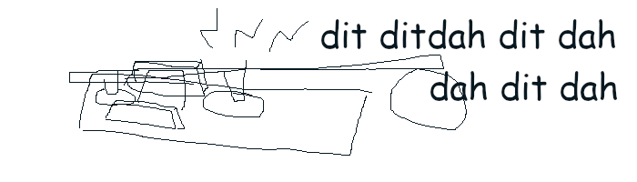

install.github("remotes")
remotes::install_github("matt-dray/remorse") # v0.1.1 here
tl;dr
On a whim, I’ve written {remorse}: a tiny R package that converts text to Morse Code to audio.
Beat a dead morse
In the last post I mentioned {sonify} for making R do little audible beeps and boops.
It reminded me of one (of many) unwritten micro-projects I’ve got kicking around in my brain: obviously you could use {sonify} to communicate Morse Code. And why not translate from text to Morse (and back) while you’re at it?1
To be honest this was a classic case of name-driven development (NDD): I thought {remorse} was a funny name for a package and worked backwards from there.
Obviously it says ‘Morse’ in the name, but also ‘remorse’ is usually what I feel after putting together a small pointless package; pointless-package existentialism (PPE) is something I have a track history with.
But of course, the true remorse is that I didn’t find the better package-name pun: {morseinspector}. But maybe that’s too long of a name and maybe non-Brits wouldn’t understand the reference. Maybe I’m thinking too hard.2
Oh dit-dit-dahling
Consider this highly plausible scenario: it’s 20XX, the apocalypse has come, and the remaining humans on planet Earth communicate by Morse Code. For some reason.3
Wow, wouldn’t it be handy to have a text-to-Morse translator?
Well friend, if you’ve managed to find an electronic thinking box in the apocalyptic barren wastelands (assuming electricity is still available (and the machine has R installed (and the {remorse} package was downloaded before the world’s internet cut out (and you know how to use R (and you don’t own a simpler, more portable Morse Code translation pamphlet))))), then you will have this incredible power at your fingertips.
Or maybe you’d rather risk it? Pfft.
Use the Morse…
That’s an awful lot of build-up for a very simple package. Let’s take a look at what little it does.
As usual, {remorse} lives on GitHub4, so it can be downloaded with a little help from the typographically-adjacent {remotes} package:
That’ll install {sonify} as well, which is needed for the audio.
Right so: text to Morse Code.
text_in <- "Ahoy pal!"
morse <- remorse::txt2morse(text_in)
morse[1] ".-/..../---/-.-- .--./.-/.-../-.-.--"So each letter has been translated to the relevant string of ‘dits and dahs’ (‘dots’ and ‘dashes’) that make up Morse Code. I’ve used a period (.) and hyphen (-) to represent these in {remorse}, with forward slashes (/) between Morse groups that represent individual characters, and a space for the spaces between words.
Note that not all characters can be converted to Morse Code. I did some research (Wikipedia) to discover the mappings from letters, numbers and punctuation to Morse Code. This information is used internally as a lookup, but is also exported in morse_lookup:
remorse::morse_lookup A B C D E F G H
".-" "-..." "-.-." "-.." "." "..-." "--." "...."
I J K L M N O P
".." ".---" "-.-" ".-.." "--" "-." "---" ".--."
Q R S T U V W X
"--.-" ".-." "..." "-" "..-" "...-" ".--" "-..-"
Y Z 0 1 2 3 4 5
"-.--" "--.." "-----" ".----" "..---" "...--" "....-" "....."
6 7 8 9 & ' @ )
"-...." "--..." "---.." "----." ".-..." ".----." ".--.-." "-.--.-"
( : , = ! . - *
"-.--." "---..." "--..--" "-...-" "-.-.--" ".-.-.-" "-....-" "-..-"
+ " ? /
".-.-." ".-..-." "..--.." "-..-." " " Of course, this means we can map backwards from Morse Code to letters, numbers and punctuation:
text_out <- remorse::morse2txt(morse)
text_out[1] "AHOY PAL!"Morse Code has no sense of case, so it just converts it all to uppercase. Like you’re shouting; the most clear form of communication.
So, you can argue justifiably that txt2morse("yo") |> morse2txt() is just a worse version of toupper() that strips out certain unmappable characters.
But of course it does so much more. Well, one thing more. Let’s go from Morse to audio.
First a reminder of the code from earlier:
morse[1] ".-/..../---/-.-- .--./.-/.-../-.-.--"And to generate audio you just:
remorse::morse2sfx(morse)The output sounds like this:
Wow. It plays audible dits (one ‘time unit’, default is dit_length = 0.05 in seconds), dahs (three), spaces between dits and dahs (one), spaces between Morse character groupings (three) and spaces between words (seven). Tell all your friends.
So, do I still feel remorse for writing {remorse}, even after demonstrating its incredible power? Yes. All I ask is that you think of me in those apocalyptic wastelands.
Note
I just realised you can turn Morse Code into… Morse Code. Mind blown.
remorse::txt2morse("hi") |>
remorse::txt2morse()[1] ".-.-.-/.-.-.-/.-.-.-/.-.-.-/-..-./.-.-.-/.-.-.-"‘Morsest Code’. Why? Absolutely.
Maybe I’ve been watching too much Tom7 recently.
Environment
Session info
Last rendered: 2023-08-13 14:07:22 BSTR version 4.3.1 (2023-06-16)
Platform: aarch64-apple-darwin20 (64-bit)
Running under: macOS Ventura 13.2.1
Matrix products: default
BLAS: /Library/Frameworks/R.framework/Versions/4.3-arm64/Resources/lib/libRblas.0.dylib
LAPACK: /Library/Frameworks/R.framework/Versions/4.3-arm64/Resources/lib/libRlapack.dylib; LAPACK version 3.11.0
locale:
[1] en_US.UTF-8/en_US.UTF-8/en_US.UTF-8/C/en_US.UTF-8/en_US.UTF-8
time zone: Europe/London
tzcode source: internal
attached base packages:
[1] stats graphics grDevices utils datasets methods base
loaded via a namespace (and not attached):
[1] htmlwidgets_1.6.2 compiler_4.3.1 fastmap_1.1.1 cli_3.6.1
[5] tools_4.3.1 htmltools_0.5.5 remorse_0.1.1 rstudioapi_0.15.0
[9] yaml_2.3.7 rmarkdown_2.23 knitr_1.43.1 jsonlite_1.8.7
[13] xfun_0.39 digest_0.6.33 rlang_1.1.1 fontawesome_0.5.1
[17] evaluate_0.21 Footnotes
Which completes my hattrick of ‘R translation’ packages, I suppose. The {r2eng} package attempts to translate R code to spoken English and have your computer speak it out loud. The {dialga} package takes R code and translates it to cron strings and those cron strings to English.↩︎
Not to mention that it’s a bad pun: the package doesn’t ‘inspect’ Morse; it translates it. Yep, definitely I’m thinking too hard about this.↩︎
Personally I’d rather see telegraphy make a comeback.↩︎
Wow, how edgy, maybe he’s had a bad run in with the CRAN maintainers, or perhaps he’s read the bit of the CRAN repository policy that says ‘a package’s contribution has to be non-trivial’ (whatever that means). Or he’s just lazy.↩︎
Reuse
CC BY-NC-SA 4.0